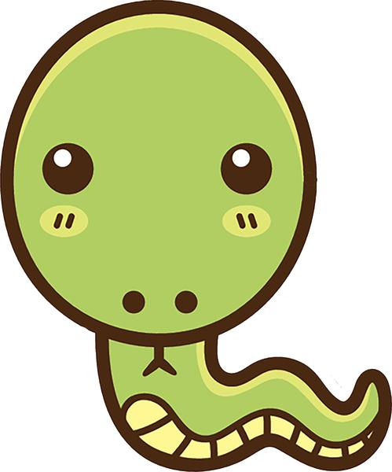

As serpentes do gênero Micrurus (Coral Verdadeira) possui uma dentição proteróglifa, onde os dentes inoculadores se localizam na região posterior superior da boca, É muito comum na Bahia, e sua toxina é caracterizada por apresentar sintomas neurotóxicos (BAHIA, 2009). Qua variam a depender da espécie.
